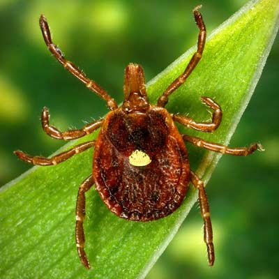
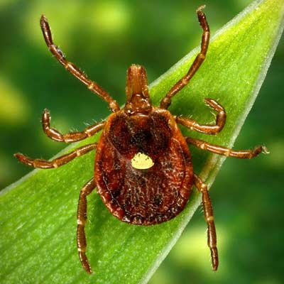

O carrapato estrela diferentemente dos demais carrapatos pode ser encontrado não só nos cachorros como em animais de grande porte tais como aves, bois, cavalos entre muitos outros é possível achar o carrapato estrela em vários lugares visto que ele possui várias opções de hospedeiros desde o meio doméstico como em matas. A princípio este pode ser encontrado e está distribuído do sul dos Estados Unidos da América até a Argentina ao longo da costa atlântica.
Apesar de ser extremamente resistente à fome , podendo ficar anos sem se alimentar, o carrapato estrela se alimenta de sangue de seus mais variados hospedeiros pois são hematófagos.
Os carrapatos possuem o cefalotórax e abdome fundidos e sua excreção nos aracnídeos é feitas por túbulos de Malpighi, semelhantes aos dos insetos, e também por glândulas localizadas na base das pernas, denominadas glândulas coxais.
Os carrapatos se movem por meio de seus 4 pares de patas desenvolvidos até sua fase adulta e se locomovem de forma lenta assim dificultando sua visualização.
Como forma de defesa estes animais optam por se esconder devido seu tamanho podendo se esconder em frestas e lugares que não podem ser facilmente localizados além de poder transmitir a febre maculosa para os seres humanos.
O carrapato estrela respira de forma traqueal, possui sistema circulatório aberto e também conta com um sistema nervoso.
O carrapato tem preferência ao hospedar-se em equídeos porém também pode se hospedar em animais silvestres, domésticos, bovinos e até mesmo em aves. A transmissão ocorre por meio de sua picada contaminando seu hospedeiro com a bactéria Rickettsia rickettsii esse processo ocorre por meio de sua picada após se alimentar do sangue de seu hospedeiro o carrapato transmite esta bactéria por meio de sua saliva.
Os carrapatos se reproduzem sexuadamente e possuem 4 fases de desenvolvimento: ovo, larva, ninfa e adulto e a fêmea coloca milhares de ovos geralmente depois de sugar o sangue de seu hospedeiro se desprendendo colocando este ovos e morrendo após isso.
Os pokémons que se parecem com o carrapato são nincada e spinarak:

 
Próximo animal:

Próximo animal: